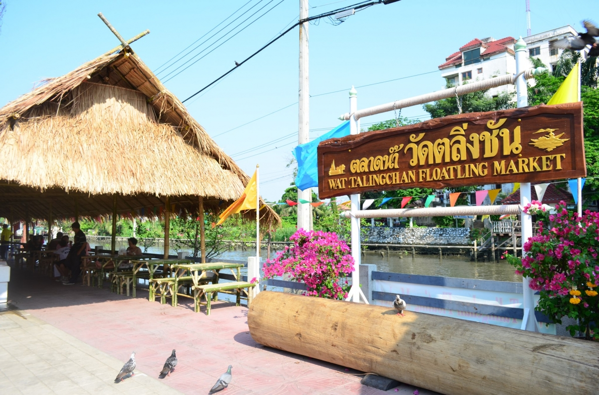
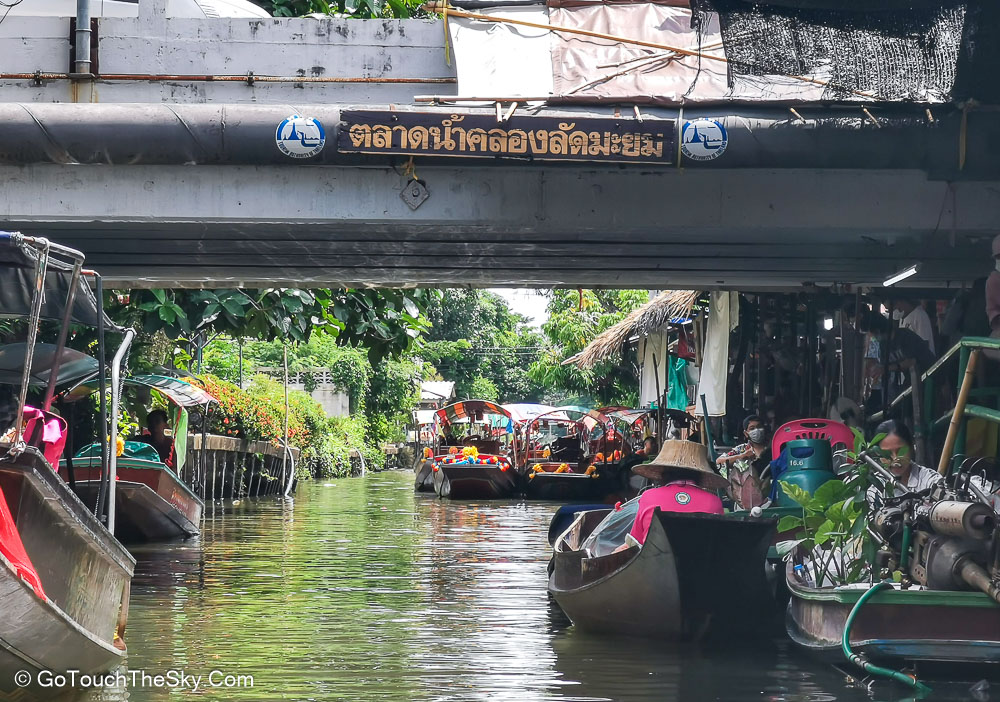
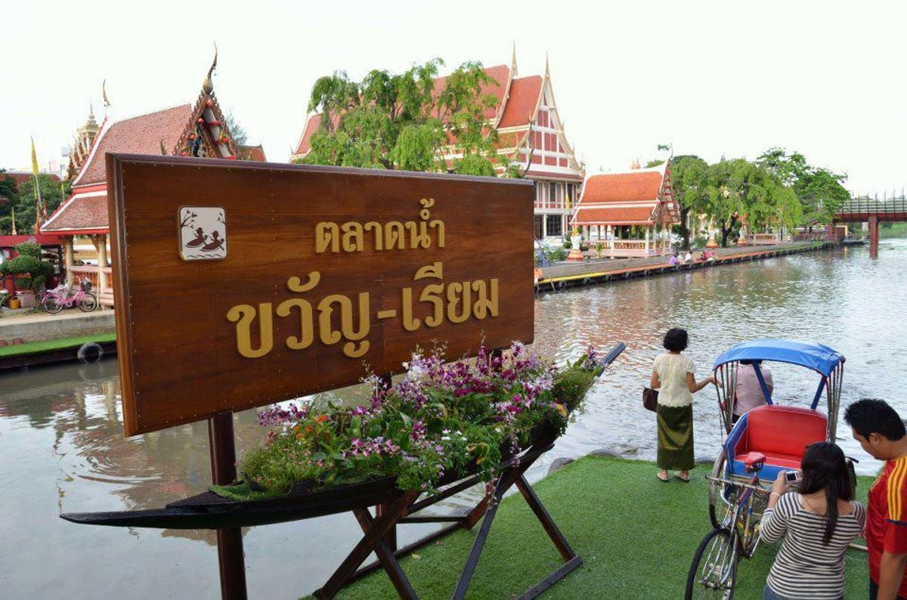

 ตลาดน้ำตลิ่งชัน เป็นตลาดน้ำใจกลางเมืองที่ยังคงความเป็น ธรรมชาติ และวิถีชีวิตชาวบ้านริมน้ำ สองฝั่ง คลอง ที่แวดล้อมไปด้วยสวนกล้วยไม้สวนผัก และผลไม้พื้นบ้านไว้ได้อย่างครบถ้วน ตลาดน้ำแห่งนี้ยังคงบรรยากาศแบบชาวบ้าน และอาหารรสชาติอร่อยแบบท้องถิ่นสมัย โบราณ ห่างไกลจากมลพิษบนท้องถนน มีเรือแพให้นั่งชิมอาหารอร่อยริมน้ำลมโชยเย็น สบายอีกด้วย |
 ตลาดน้ำคลองลัดมะยม เป็นตลาดน้ำโบราณ ตั้งอยู่ย่านตลิ่งชัน กรุงเทพฯ มีอาหารและของกินที่หลากหลาย ให้เลือกสรร แถมยังมีสวนเจียมตน เป็นสวนไม้ยืนต้นและไม้จำพวกสมุนไพร ทั้งหลายให้ศึกษา เหมาะแก่การพักผ่อนหย่อนใจ และสัมผัส ธรรมชาติในวันหยุด |
 ตลาดน้ำขวัญเรียม เป็นตลาดน้ำกลางกรุง ริมคลองแสนแสบที่ร่มรื่น สร้างขึ้นจากแนวคิด การจำลองวิถีชีวิต ของชาวบ้านริมคลองแสนแสบ เพื่อให้เป็น แหล่งเรียนรู้วิถีชีวิตริมน้ำ ถึงคนรุ่นหลังค่ะ ตลาดน้ำนี้ ซึ่งที่นี่จะม ีแลนด์มาร์คสำคัญคือ สะพานเชื่อม สองฝั่ง วัดบำเพ็ญเหนือ และด้วยสะพานเรือที่เชื่อม ระหว่างวัดบำเพ็ญเหนือและ วัดบางเพ็งใต้ ที่นี่จึงเป็นตลาดน้ำแห่งแรกที่มีสะพานเรือเชื่อมต่อ วัฒนธรรมสองฝั่งคลองให้อยู่ร่วมกัน
|
|---|